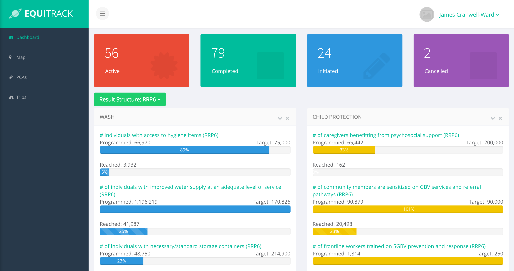

EquiTrack

Monitoring and Tracking Results for Children
What does it do?
- Create and manage partnerships in a centralized and online database
- Attributing and tracking partnerships against multitude of Result Structures, Donors, Grants, Geographical locations and Gateways
- An online repository of PCA documentation accessible anywhere
- Custom reports generation to Excel, Google Earth (KML) and Shapefile (GIS)
- Monitors partnerships with standard indicators against set targets
- Dynamic Dashboard for Analysis and tracking results against global targets
- Convergence and Coverage analysis
- Interactive mapping of partner activities and locations
PCA Input
- Add new PCA - can be multi-sector, with attributes: Status, Start and End Date, Budget, Implementing Partner NGO, Locations where it will be implemented, the Goals it is fulfilling, Target Number of Beneficiaries, Intermediate Results, WBS, RRP Outputs, PCA Files, Grants and Donors, etc.
- Edit PCA - can add new attributes or remove existing ones.
- Delete PCA - a PCA can be deleted, unless the implementation has started. In that case, its status can be set to "canceled".
- Filtering of PCAs - is one of the main utilities of the tool, through which one can filter PCAs through one or more conditions, e.g.: by Sector, Indicator, Implementing Partner, CCC as well as through a more advanced filtering of attributes like, budget, locations, grant, start and end dates etc. , and export the results in excel and many other formats.
Result Structure Setup
- RRP (Regional Response Plan) - belongs to a sector, and is a standardized description of UNICEF's outputs in emergencies.
- CCC - How a PCA is contributing to a CCC.
- Indicator - expressed through one (or more Units) and a target number of the corresponding unit. The automatic calculation of shortfall and progress towards target for all indicators, as PCAs are programmed and implemented, is the core feature of the system.
- Units - add/edit/remove unit types, e.g. schools, children, women etc. (generally representing beneficiaries or points of interest where activities of PCAs happen or are about)
- Activities - generic activities that happen in various PCAs, e.g. training, distribution of water tanks etc.
- Intermediate Results, WBS Activity - correspond to a particular sector, with an Intermediate Result having many WBS (work breakdown structure) Activities
Administrative Data
- Manage Sectors - UNICEF Sectors can be added, edited or removed (unless the sector has CCCs and other data that it is attributed with)
- Add administrative data about country - 3 administrative levels are supported: Governorate, District, Cadastral
- Add gateways (locations) - these represent schools, health centers and other generic locations where activities happen.
- Partners - Partners can be added and assigned to PCAs.
- Donors - donors can be added.
- Grants - can be added and identified uniquely through grant reference numbers.
Dashboard - Visualization of cumulative (i.e. data from all PCAs) current and shortfall target levels, categorized by sector, Map - a web-based public map with bubbles, representing PCAs, which are clustered depending on zoom level and categorized through sector, indicator and partner organization.
The process

Screenshots
PCA Management:

Mapping of partner activities: